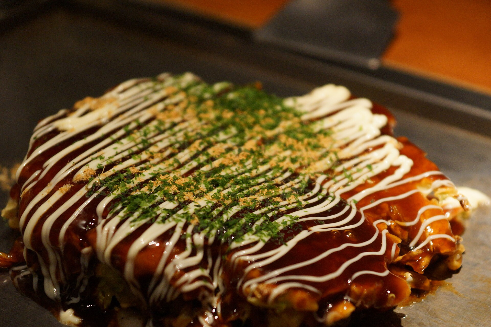

Description
Okonomiyaki is a type of japanese pancake and the name roughly translates to
"fry what you like". Many ingredients except for the basic batter components
are optional.
- 1 egg
- 1dl okonomiyaki flour
- 1dl water
- 150g cabbage, shredded to 3cm long strips
- a few strips of bacon
- some green onion
- okonomiyaki sauce
- japanese style mayonnaise
Steps
- Mix egg, flour, water and stir
- Add cabbage and green onion
- Fry the batter in a frying pan until it's brown underneath
- Don't spread the batter too thin. Make it about 2cm thick
- While it's frying, add strips of bacon on top
- Flip it over and fry the bacon side of the pancake
- When done, remove from frying pan, spread okonomiyaki sauce on top and the sprinkle mayo liberally over everything
Home